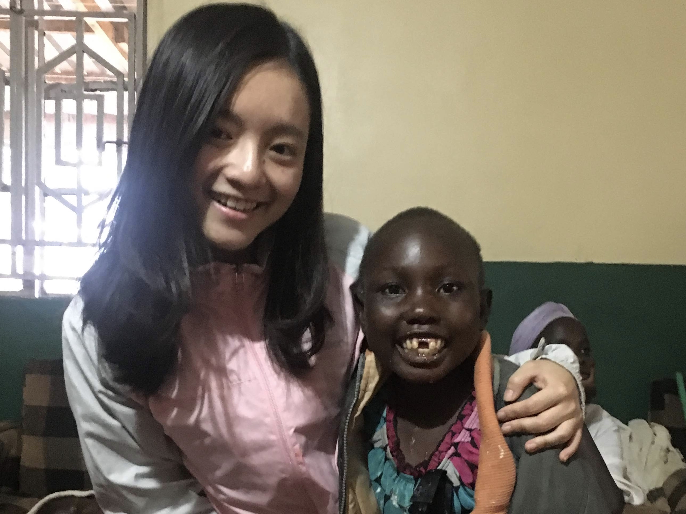
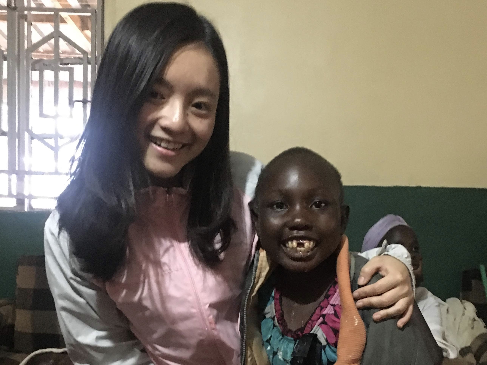

LOVE Binti. project is held by STEP30, a Taiwanese organization committed to supporting people in East Africa for the long term. This project originated from discovering the lack of sanitary products for teenage Kenyan girls during menstrual cycles. They would use alternative things or even put themselves in prostitution to exchange a pack of sanitary pads. Therefore, we taught Kenya teenage girls to make reusable sanitary pads and conveyed the value of being women.
I accompanied kids in precious kids contre, an orphanage that accept disabled kids. Kenyan abandoned their functionally-disabled children because they think of difference from most people as a curse.
I also joined a family and did everything they did in one day, including chopping the wood, killing a chicken, cooking it, carrying water from far away to home, etc.
While experiencing severe cultural shock, I broadened my horizons. Knowing that there is somewhere different from where I live, I lowered myself and was more grateful to the resources I used to take for granted.


 
